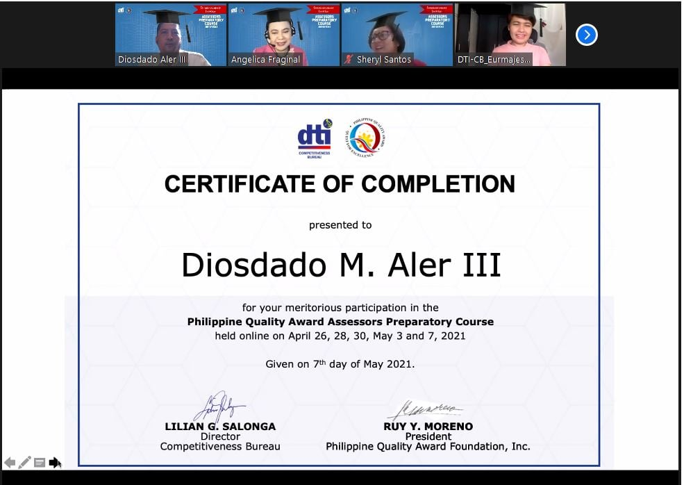

First Place - Paper Presentation (Technology, Engineering and Sciences Category , 3rd International and Annual Convention Philippine Association of Extension Program Implementers (PAEPI-Global), Bahay Kalinaw University of the Philippines Diliman, Quezon City,February 22-23, 2016
CERTIFICATE OF COMPLETION presented to Diosdado M. Aler IIIfor your meritorious participation in the Philippine Quality Award Assessors Preparatory Courseheld online on April 26, 28, 30, May 3 and 7, 2021

Outstanding Organization Moderator, Gabi ng Parangal San Beda College of Arts and Sciences March 2013
Featured in PCWorld Philippines Campus Edition Volume 1 Number 1 2012 in the section People Power in an article entitled Linking the Digital Divide on page 27
Top Ten Faculty Members on Student Evaluation (ranked 9th) -- San Beda College SY 2010-2011
Teaching Excellence Award -- Far Eastern University East Asia College, First Semester SY 2008-2009 February 21, 2009
Professor Bibbo Student Choice Award February 14, 2005 San Beda College Student Council

Most Bibong Prof Prof Ko To Student Choice Award February 12, 2004 San Beda College Student Council
Top Ten Faculty Members on Student Evaluation (ranked 4th) -- San Beda College SY 1996-1997 Oct 24, 1997

PD 451 Scholar June 1985